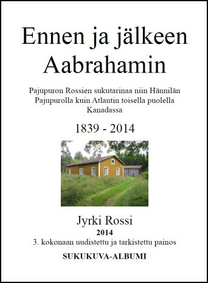

SUKUTUTKIMUSOPPIMATERIAALIA NETISSÄ VUODESTA 1999 LÄHTIENPSYKOLOGIAN PIKALINKIT PSYKAN VIDEOABIKURSSIT: PSYKOLOGIAN MAAILMA -VIDEOKERTAUSKURSSI ABEILLE (vlogi) - UUSI OPS!! PS7 ABI KERTAUSKURSSI (opetustilanne) - VANHA OPS (OPS 2016-): PS1 Psyykkinen toiminta ja oppiminen PS2 Kehittyvä ihminen PS3 Tietoa käsittelevä ihminen PS4 Tunteet, psyykkinen hyvinvointi ja mielenterveys PS5 Yksilöllinen ja yhteisöllinen ihminen Harva onkaan ihan Aabrahamiin asti selvittänyt sukuaan, mutta minäpä olenkin. Vaimon nimi ei ollut vain Saara, vaan Maria os. Kingelin. Aabrahamia en ennättänyt tavata koskaan, sillä hän kuoli isäni ollessa vasta alta kolme vuotias, mutta paljon olen hänen elämästään ja reissuistaan tietoa saanut. Aabraham oli ensimmäisiä keskisuomalaisia kanteleen tekijöitä ja myös soittajia, hän teki kaksi reissua Kanadaan 1910-luvun vaihteessa tienatakseen leipää perheelleen, hän oli työmies, kuten tuohon aikaan niin moni muukin, mutta uskaltautui silti ostamaan itselleen oman Murronahon tilan Saarijärven Pajupurolta vuonna 1898. Kuvassa Aabraham ja Maria istuskelevat Murronahon rappusilla tiettävästi 1930-luvun alussa. Rautalammin Rossit Pajupuron Rossit Tervetuloa latomuseoon! Linkkejä sukututkijalle |
Pajupuron Rossit
Rossit alkoivat asuttaa Saarijärveä 1800-luvun alkupuolella. Oma Saarijärven Pajupuron Rossien esi-isä muutti perheineen Rautalammilta Tarvaalan Randalan torppaan jouluna 1839.
Ajatuksenani on tuoda tällä sivulla myöhemmässä vaiheessa esiin sukuni vaiheita Pajupurolla siltä osin kuin laki sallii. 
Olen kirjoittanut Pajupuron Rossien sukuhistorian, jota olen jakanut lähisukulaisilleni liimasidottuna 160-sivuisena värillisenä ja jopa 575 kuvaa sisältävänä kirjasena. Kirjassa on esitelty koko Rossien historia tuosta joulusta 1839 lähtien eri vaiheineen, kuinka Samuli Rossi rakentaa Hännilän Pajupuron kylään Koivumäen talonsa, miten Samulin lapsille käy, kuinka Samulin pojan Eeron poika Aabraham Rossi, minun pappani isä ostaa Murronahon tilan, jossa siten minäkin synnyn. Alussa olen totta kai lyhyesti kertonut Samuli Rossin esivanhempien vaiheet noin vuodesta 1600 alkaen. Esittelen kirjasessani myös talojen historiaa lainhuudatus- ym. papereiden kautta sekä Pajupuron yleistä historiaa aina vuoteen 1959 asti. Kirjasessani tuon esiin myös asian, jota Rossit ovat paljon pohtineet, mutta eivät aiemmin selvitelleet - eli taiteilija Hannes Autereen sukulaisuussuhteen meihin Rosseihin. Hannes Autereen mummu oli Maria Rossi, Matti Tarvaisen eli Matti Haarasenmäen vaimo. Hannes oli siis pappani pikkuserkku.Aiemmat kaksi ensimmäistä versiota kattoivat ensi sijaisesti ajan 1839-1959, mutta 3. versio sisältää sukumme historiikin kuvineen vuoteen 2014 asti. Tiedot löytyvät siis kaikista serkuistani, pikkuserkuistani, heidän lapsistaan ja lapsenlapsistaan ja tietenkin meitä edeltävistä sukupolvista. Periaatteessa siis kaikki Aabraham Rossin (k. 1936) jälkipolvi on kuvien kera nyt kansissa. Kirjasta jaan ainoastaan suvulle, koska kirjanen sisältää henkilötietolain mukaan luvan vaativia ei-julkisia tietoja. Kirjan tekeminen oli todella mielenkiintoista ja haastavaa, sillä puolet Aabrahamin jälkeläisistä asuu Kanadassa. HUOM! KUVA OHESSA EI OLE LINKKI. Jos kuulut Aabrahamin jälkeläisiin, voit kysyä kirjasta minulta henkilökohtaisesti. |